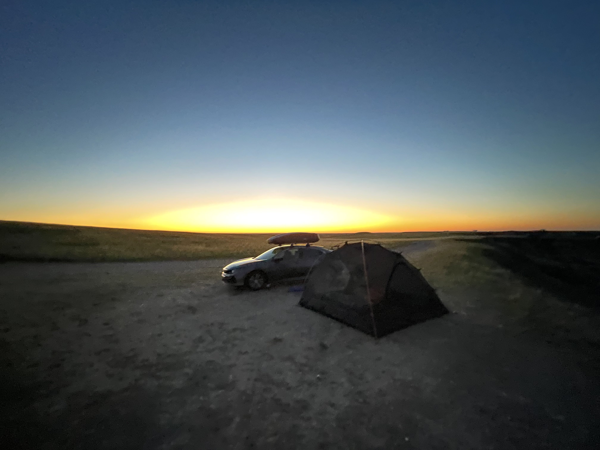
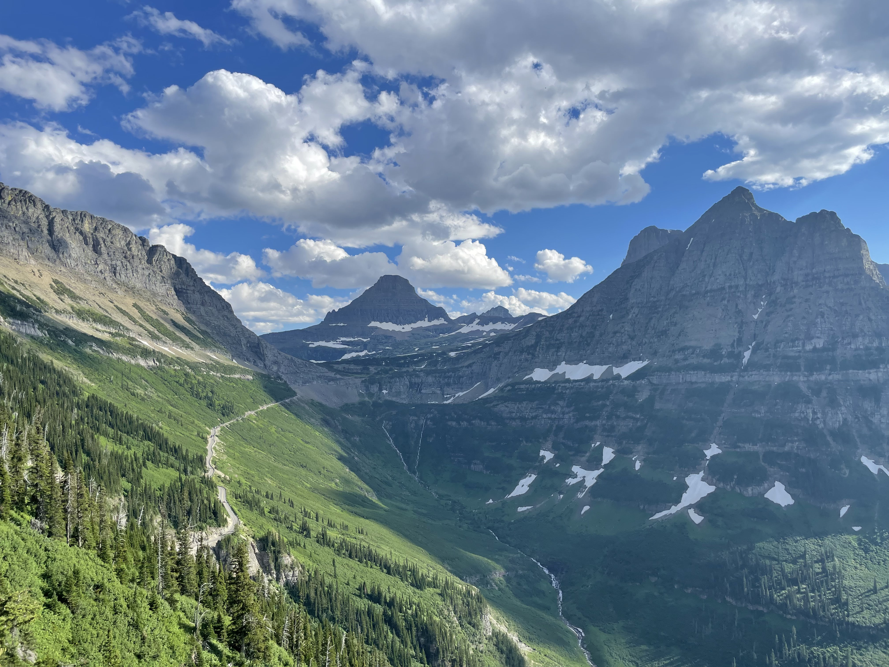
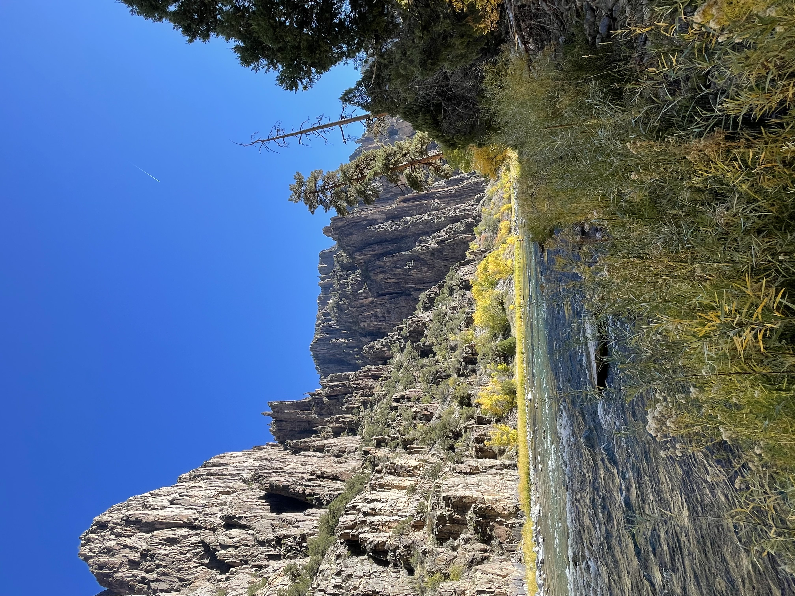
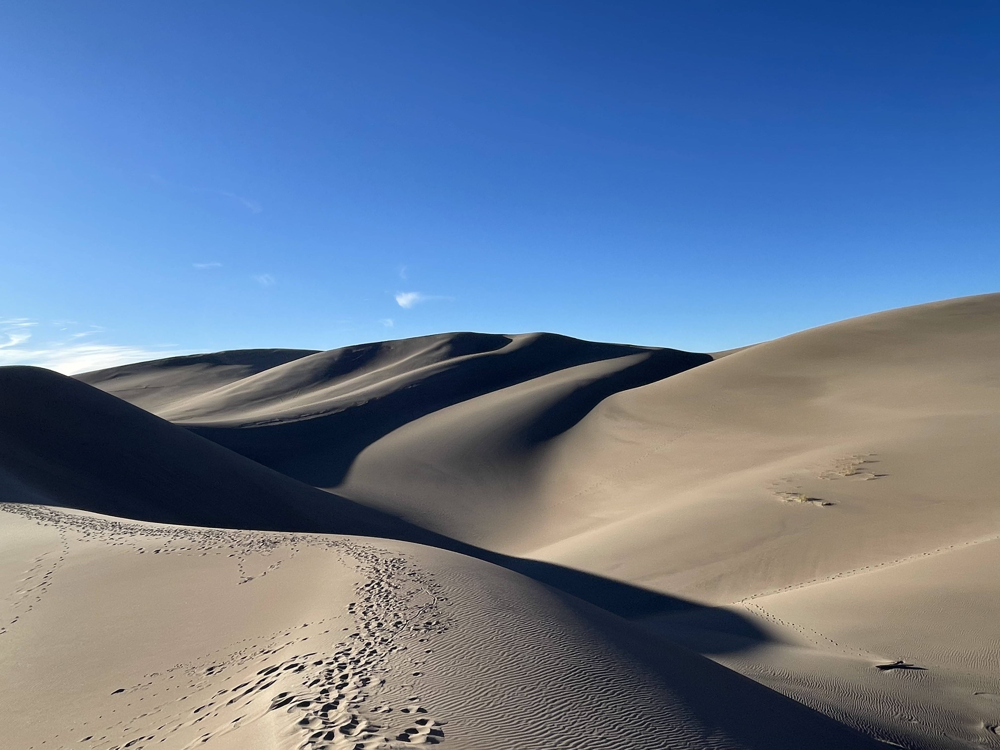
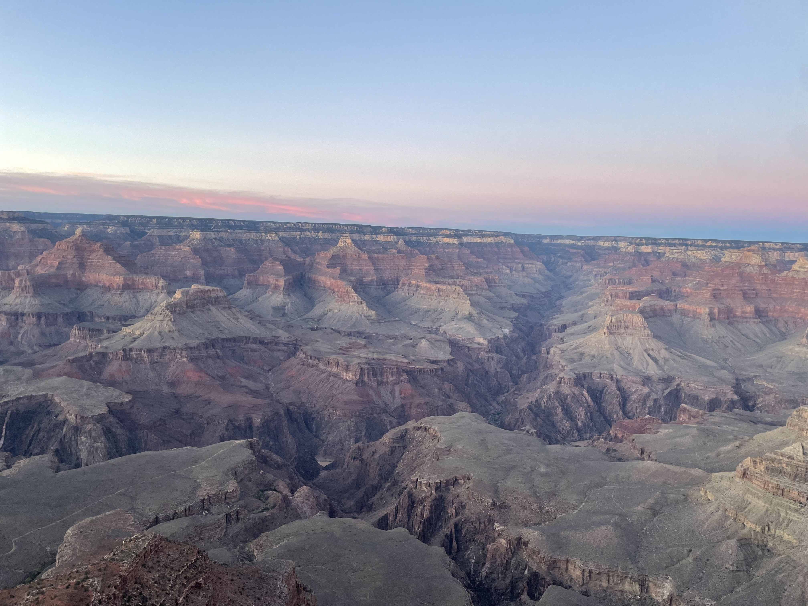
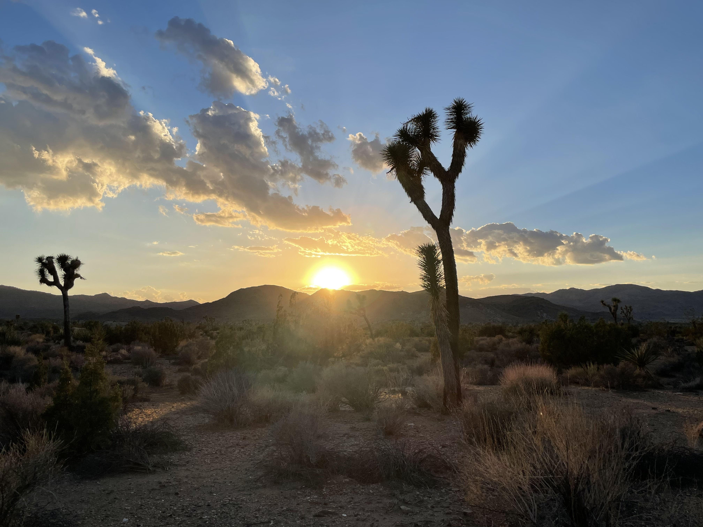

Badlands
Glacier
Black Canyon
Great Sand Dunes
Grand Canyon
Joshua Tree
Highlights from America's National Parks
This site features photos from several different Nathional Parks. Click below to subscribe to the NPS newsletter!
Sign Up

Stunning Views

Black Canyon of the Gunnison in the morning

Great Sand Dunes in the Afternoon

The Grand Canyon at Dusk

Joshua Tree at Sunset
"The mountains are calling and I must go." -John Muir
Sign up for NPS emails!
Don't miss an update!
Sign Up